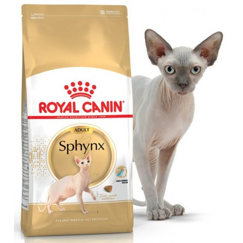

Оптимальный возраст, в котором котенка можно отбирать от матери кошки, - с 12 недель. В первые дни полной отмены материнского молока у котенка могут быть нарушения пищеварения в течении 2-3 дней.Иногда котята плохо переносят обычное магазинное молоко, в таком случае, его лучше отменить и обходиться творогом, кисломолочными продуктами.Кормить котенка нужно кормить несколько раз в день, понемногу, помня, что "желудок у котенка меньше наперстка".Обычно котята отходят от миски сами или начинают "закапывать" еду, когда наедятся, но бывают и обжоры, за такими надо следить.Вопреки расхожим стереотипам и сказкам, кошки не могут питаться одной рыбой. В природе дикие кошки питаются мелкими грызунами, птицами, причем съедают их вместе со шкуркой и содержимым желудка - зернами и травами, иногда попадаются мелкие птицы, рыба же им практически не достается.
Вот примерный перечень продуктов, которые должны входить в рацион кошки и разнообразить его:
Мясные продукты: мясо говяжье/телячье или фарш говяжий, куриное мясо, фарш, куриные субпродукты: головы, шеи, сердечки, печенки, желудки. Ежедневно, всего понемногу или чередуя по дням. Фарш не должен содержать соли и специй.
Яйцо: раз-два в неделю, сырое или сваренное всмятку, как больше понравится кошке.
Каши: все крупы, кроме геркулеса, гороха и фасоли, дробленые или цельные, сваренные на молоке или, в случае непереносимости молока, на воде. Можно давать размоченный хлеб с отрубями. Даются вместе с мясными продуктами или самостоятельно.
Овощи: вареные или сырые, растертые, все, что понравится кошке, даются с мясом вместо каш.
Кисломолочные продукты: творог, сметана (нежирная), немного сыра, кефир, простокваша, бифидопродукты и т.д.
Вода: должна быть обязательно свежей, кипяченой, в привычном для кошки месте.
Витамины: в качестве профилактики нужно давать вместе с кормом.
Сухие корма: если нет возможности готовить кошке разнообразную еду, ее можно перевести на сухой корм. Hельзя кормить кошку одновременно кормами и натуральной пищей, в качественных кормах ведущих производителей (а именно такие следует давать кошке) соотношения всех веществ сбалансированы, при сочетании с натуральными продуктами можно получить недостаток одних веществ и избыток других, и, как следствие, нарушение обмена веществ.
Чем не рекомендуется кормить кошку: рыба в любом виде, свинина, геркулес, любая еда с нашего стола - жареная, вареная, с солью и специями, консервы, широко рекламируемые корма низкого качества (Вискас, Китикет).
